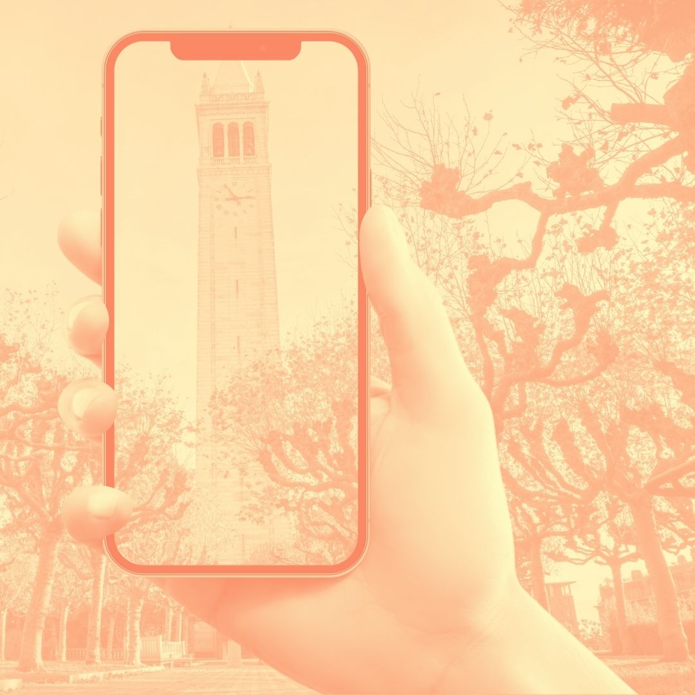

Some Things I've Done





MEDIA AND SPEAKING
Some cool people talk about things I do sometimes. Sometimes I do some of the talking in cool places.
News
April 2021
SF Chronicle: Can’t book a vaccine? These Berkeley students want you to call their hotline
It was printed on the gosh darn physical, tree paper newspaper. Like in ink that stains your fingertips!!
April 2021
April 2021
ABC7: A Group of Tenacious Berkeley Students Have Created a Phoneline for Vaccines
So this is a tweet containing a video of our ABC7 TV Segment
April 2021
Speaking
March 2022
October 2021
March 2021
May 2019
April 2019
April 2018
Blogs and Other Media
April 2021
UC Berkeley Arts + Design: Made at Berkeley; Shotline
It's like a real life print book made out of tree paper, looks just like a website, completely wild
April 2021
PUBLICATIONS
2021
Model-based Formalization of the Autonomy-to-Human Perception Hand-off. UC Berkeley Technical Report.
Yash Pant, Bala Kumaravel, Ameesh Shah, Erin Kraemer, Marcell Vazquez-Chanlatte, Kshitij Kulkarni, Bjoern Hartmann, Sanjit A. Seshia